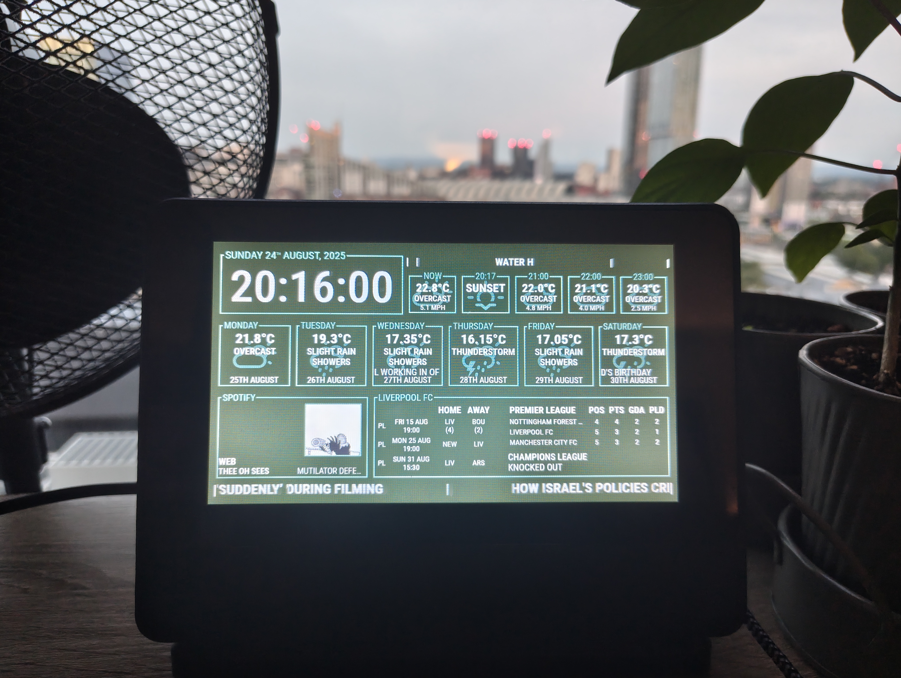
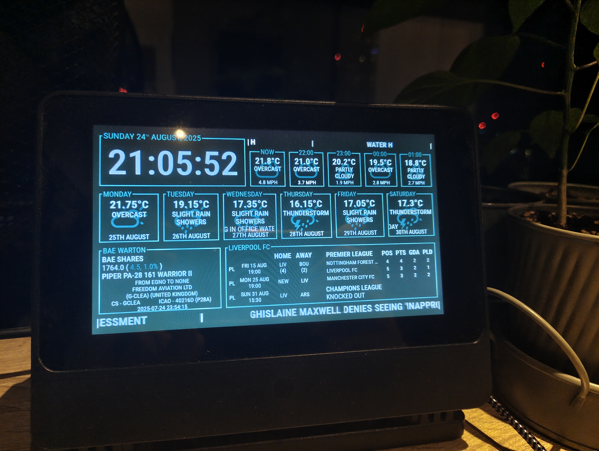

SQL
Python
Linux
Web Design
Javascript
November 2024
Another kiosk device used to display handy info but for an office, specifically my own at home. The screen shows info such as weather, events, Liverpool FC scores and even what song I am currently listening to on Spotify. After working on the Van Kiosk I realised that I could do with something similar for myself and also that I could make things far more efficient.


The kiosk itself is a website locally hosted on a Raspberry Pi 3 with the device hardcoded to boot into a Chromium window displaying the website and locking into it. Instead of the site using Javascript scripts to display the values of the data, the site is hosted using Flask, a lightweight Python webapp hosting framework that is very suitable for this usecase (and retroactively would have been more useful for the van kiosk as well). With Flask, the data recorded can be displayed Pythonically. To do this, and store the data itself, I used a SQLite database instead of JSON files. The SQLite Database is itself populated by a series of Python scripts.
The data for this kiosk was far more straightforward to retrieve. All of the values required were available online instead of using hardware and there was no need to account for potential movement
Time and date as shown in the top left were taken directly from the device itself
The hourly weather for the current day and the daily weather for the week below, sourced from Open-Meteo
Calendar events taken directly from the Google Calendar API, linked with my own account and shown above the hourly weather and as part of the upcoming week
Currently listening on Spotify, taken using Spotify's own API. Unlike the others, this data is taken directly from the API and not stored anywhere locally to avoid the performance loss from regularly having to read and write. Instead a direct connection to the Spotify API is made that polls the currently listening endpoint every three seconds with a python script. Using WebSockets the results of the script are then communicated to the webserver and live updated upon any changes. This allows the display to change as soon as a song plays or changes.
When no songs are being listened to, a display of BAE's stock and flight tracker for the office using Yahoo Finance's API and the ADSDB API
Liverpool FC's standing in both the Premier League and the Champions League (note that despite what the screenshot says, Liverpool hadnt been knocked out at this point and will not be, the code to display this didnt account for game not yet being drawn) as well their most recent and upcoming matches. This info is sourced from football-data.org's api's free package
Finally at the bottom, a BBC News style ticker with headlines sourced from BBC's UK and Global news RSS feeds
These scripts are scheduled to run either every 15 minutes (news, weather and events) or every hour (stocks, flights and LFC). As well as storing the data, the database also keeps track of runs using a logging table that records each script runtimes as well as the record counts and any error messages that occur.
Visit Github Repo...